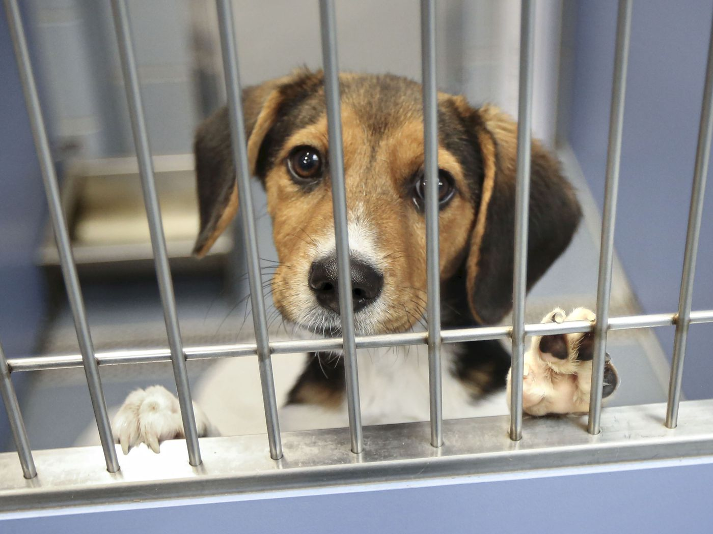
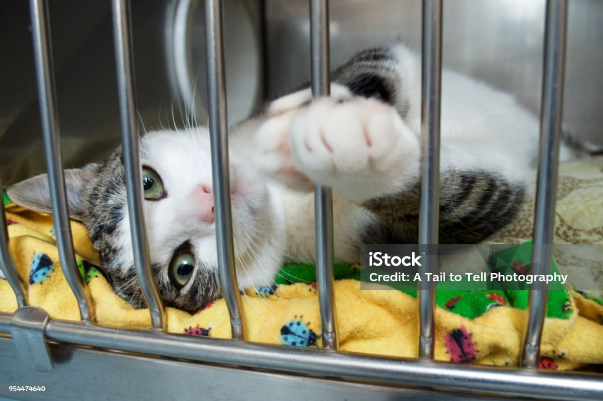
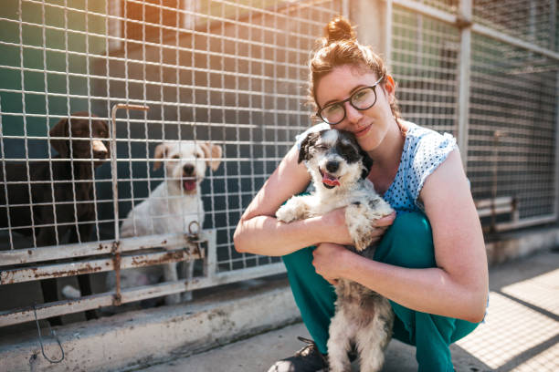
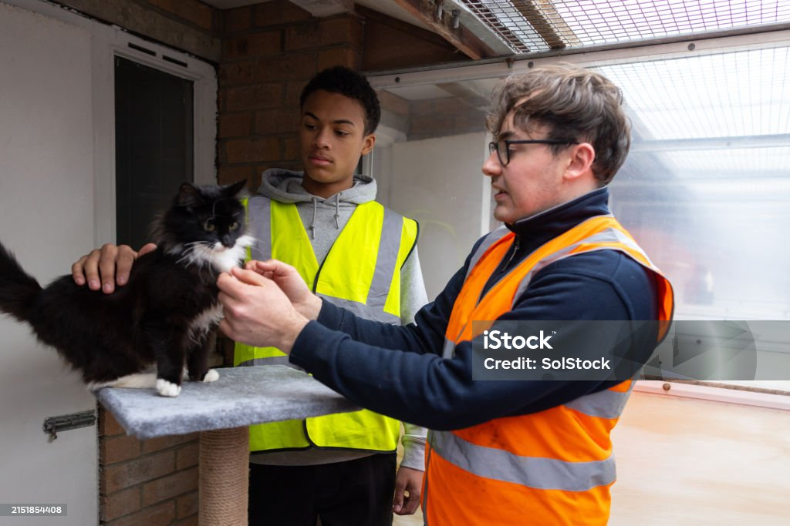

Buddy
Age: 2 years | Breed: Labrador cross
Buddy is a friendly, energetic dog who loves company and long walks. He is good with children and would suit an active household.
Enquire about BuddyEvery animal below has been health-checked, vaccinated, and sterilised. If one catches your eye, use the enquiry form to start the adoption process.

Age: 2 years | Breed: Labrador cross
Buddy is a friendly, energetic dog who loves company and long walks. He is good with children and would suit an active household.
Enquire about Buddy
Age: 1 year | Breed: Tabby cat
Whiskers is a calm, affectionate cat who enjoys quiet company and sunny windowsills. She would suit a low-key home.
Enquire about Whiskers
Age: 3 years | Breed: Staffordshire terrier cross
Nala is a loyal, gentle dog who is well-trained and enjoys other dogs. She is looking for a patient, experienced owner.
Enquire about Nala
Age: 6 months | Breed: Domestic shorthair kitten
Max is a playful kitten who is curious about everything. He would do best in a home with another young cat for company.
Enquire about MaxNo profiles match your search. Try a different name or filter.
The profiles are examples for this fictional project. The form cannot confirm real-world availability.
Open the Enquiry Form